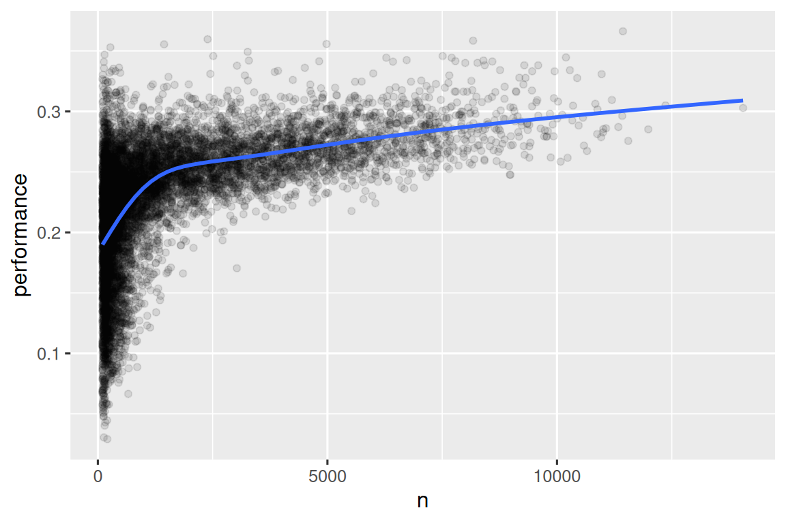

library(nycflights13)
library(tidyverse)
#> ── Attaching core tidyverse packages ───────────────────── tidyverse 2.0.0 ──
#> ✔ dplyr 1.1.4 ✔ readr 2.1.5
#> ✔ forcats 1.0.0 ✔ stringr 1.5.1
#> ✔ ggplot2 3.5.1 ✔ tibble 3.2.1
#> ✔ lubridate 1.9.3 ✔ tidyr 1.3.1
#> ✔ purrr 1.0.2
#> ── Conflicts ─────────────────────────────────────── tidyverse_conflicts() ──
#> ✖ dplyr::filter() masks stats::filter()
#> ✖ dplyr::lag() masks stats::lag()
#> ℹ Use the conflicted package (<http://conflicted.r-lib.org/>) to force all conflicts to become errors3 Transformación de datos
3.1 Introducción
La visualización es una herramienta importante para generar información, pero es raro que obtenga los datos exactamente en la forma correcta que necesita para hacer el gráfico que desea. A menudo, necesitará crear nuevas variables o resúmenes para responder a tus preguntas con tus datos, o tal vez solo quiera cambiar el nombre de las variables o reordenar las observaciones para que sea un poco más fácil trabajar con los datos. Aprenderá cómo hacer todo eso (¡y más!) en este capítulo, que lo introducirá a la transformación de datos utilizando el paquete dplyr y un nuevo conjunto de datos en vuelos que partieron de la ciudad de Nueva York en 2013.
El objetivo de este capítulo es brindarle una descripción general de todas las herramientas clave para transformar un data frame. Comenzaremos con funciones que operan en filas y luego columnas de un data frame, luego regresamos para hablar más sobre las canalizaciones o pipe, una herramienta importante que usa para combinar verbos. A continuación, introduciremos la capacidad de trabajar con grupos. Terminaremos el capítulo con un caso de estudio que muestra estas funciones en acción. En capítulos posteriores volveremos a las funciones con más detalle a medida que comencemos a profundizar en tipos específicos de datos (por ejemplo, números, cadenas, fechas).
3.1.1 Requisitos previos
En este capítulo nos centraremos en el paquete dplyr, otro miembro central de tidyverse. Ilustraremos las ideas clave usando datos del paquete nycflights13 y usaremos ggplot2 para ayudarnos a comprender los datos.
Tome nota del mensaje de conflictos que se imprime cuando carga el tidyverse. Te dice que dplyr sobrescribe algunas funciones en base R. Si desea utilizar la versión base de estas funciones después de cargar dplyr, deberá utilizar sus nombres completos: stats::filter() y stats::lag(). Hasta ahora hemos ignorado en su mayoría de qué paquete proviene una función porque la mayoría de las veces no importa. Sin embargo, conocer el paquete puede ayudarlo a encontrar ayuda y funciones relacionadas, por lo que cuando necesitemos ser precisos sobre de qué paquete proviene una función, usaremos la misma sintaxis que R: nombrepaquete::nombrefuncion().
3.1.2 nycflights13
Para explorar los verbos básicos de dplyr, usaremos nycflights13::flights. Este conjunto de datos contiene todos los 336,776 vuelos que partieron de la ciudad de Nueva York en 2013. Los datos provienen de la Oficina de Estadísticas de Transporte de EE. UU. y están documentados en ?flights.
flights
#> # A tibble: 336,776 × 19
#> year month day dep_time sched_dep_time dep_delay arr_time sched_arr_time
#> <int> <int> <int> <int> <int> <dbl> <int> <int>
#> 1 2013 1 1 517 515 2 830 819
#> 2 2013 1 1 533 529 4 850 830
#> 3 2013 1 1 542 540 2 923 850
#> 4 2013 1 1 544 545 -1 1004 1022
#> 5 2013 1 1 554 600 -6 812 837
#> 6 2013 1 1 554 558 -4 740 728
#> # ℹ 336,770 more rows
#> # ℹ 11 more variables: arr_delay <dbl>, carrier <chr>, flight <int>, …flights es un tibble, un tipo especial de data frame utilizado por tidyverse para evitar algunos errores comunes. La diferencia más importante entre los tibbles y los data frames es la forma en que se imprimen los tibbles; están diseñados para grandes conjuntos de datos, por lo que solo muestran las primeras filas y solo las columnas que caben en una pantalla. Hay algunas opciones para ver todo. Si está utilizando RStudio, lo más conveniente es probablemente View(flights), que abrirá una vista interactiva, desplazable y filtrable. De lo contrario, puede usar print(flights, width = Inf) para mostrar todas las columnas, o usar glimpse():
glimpse(flights)
#> Rows: 336,776
#> Columns: 19
#> $ year <int> 2013, 2013, 2013, 2013, 2013, 2013, 2013, 2013, 2013…
#> $ month <int> 1, 1, 1, 1, 1, 1, 1, 1, 1, 1, 1, 1, 1, 1, 1, 1, 1, 1…
#> $ day <int> 1, 1, 1, 1, 1, 1, 1, 1, 1, 1, 1, 1, 1, 1, 1, 1, 1, 1…
#> $ dep_time <int> 517, 533, 542, 544, 554, 554, 555, 557, 557, 558, 55…
#> $ sched_dep_time <int> 515, 529, 540, 545, 600, 558, 600, 600, 600, 600, 60…
#> $ dep_delay <dbl> 2, 4, 2, -1, -6, -4, -5, -3, -3, -2, -2, -2, -2, -2,…
#> $ arr_time <int> 830, 850, 923, 1004, 812, 740, 913, 709, 838, 753, 8…
#> $ sched_arr_time <int> 819, 830, 850, 1022, 837, 728, 854, 723, 846, 745, 8…
#> $ arr_delay <dbl> 11, 20, 33, -18, -25, 12, 19, -14, -8, 8, -2, -3, 7,…
#> $ carrier <chr> "UA", "UA", "AA", "B6", "DL", "UA", "B6", "EV", "B6"…
#> $ flight <int> 1545, 1714, 1141, 725, 461, 1696, 507, 5708, 79, 301…
#> $ tailnum <chr> "N14228", "N24211", "N619AA", "N804JB", "N668DN", "N…
#> $ origin <chr> "EWR", "LGA", "JFK", "JFK", "LGA", "EWR", "EWR", "LG…
#> $ dest <chr> "IAH", "IAH", "MIA", "BQN", "ATL", "ORD", "FLL", "IA…
#> $ air_time <dbl> 227, 227, 160, 183, 116, 150, 158, 53, 140, 138, 149…
#> $ distance <dbl> 1400, 1416, 1089, 1576, 762, 719, 1065, 229, 944, 73…
#> $ hour <dbl> 5, 5, 5, 5, 6, 5, 6, 6, 6, 6, 6, 6, 6, 6, 6, 5, 6, 6…
#> $ minute <dbl> 15, 29, 40, 45, 0, 58, 0, 0, 0, 0, 0, 0, 0, 0, 0, 59…
#> $ time_hour <dttm> 2013-01-01 05:00:00, 2013-01-01 05:00:00, 2013-01-0…En ambas vistas, los nombres de las variables van seguidos de abreviaturas que indican el tipo de cada variable: <int> es la abreviatura de entero, <dbl> es la abreviatura de doble (también conocido como número real), <chr> para carácter (también conocido como cadenas) y <dttm> para fecha y hora. Estos son importantes porque las operaciones que puede realizar en una columna dependen mucho de su “tipo”.
3.1.3 Básicos de dplyr
Está a punto de aprender los principales verbos (funciones) de dplyr que le permitirán resolver la gran mayoría de sus desafíos de manipulación de datos. Pero antes de discutir sus diferencias individuales, vale la pena señalar lo que tienen en común:
El primer argumento es siempre un data frame.
Los argumentos subsiguientes normalmente describen en qué columnas operar, utilizando los nombres de las variables (sin comillas).
La salida es siempre un nuevo data frame.
Debido a que cada verbo hace una cosa bien, resolver problemas complejos generalmente requerirá combinar varios verbos, y lo haremos con la canalización |>. Hablaremos más sobre las canalizaciones en Sección 3.4, pero en resumen, una canalización toma la cosa a su izquierda y la pasa a la función a su derecha para que x |> f(y) sea equivalente a f(x, y), y x |> f(y) |> g(z) es equivalente a g(f(x, y), z). La forma más fácil de leer pipe es “entonces”. Eso hace posible tener una idea del siguiente código aunque aún no haya aprendido los detalles:
Los verbos de dplyr están organizados en cuatro grupos según lo que operan: filas, columnas, grupos o tablas. En las siguientes secciones, aprenderá los verbos más importantes para filas, columnas y grupos, luego regresaremos a los verbos de unión que funcionan en tablas en Capítulo 19. ¡Vamos a empezar!
3.2 Filas
Los verbos más importantes que operan en las filas de un conjunto de datos son filter(), que cambia qué filas están presentes sin cambiar su orden, y arrange(), que cambia el orden de las filas sin cambiar cuáles están presentes. Ambas funciones solo afectan a las filas y las columnas no se modifican. También hablaremos de distinct(), que encuentra filas con valores únicos pero, a diferencia de arrange() y filter(), también puede modificar opcionalmente las columnas.
3.2.1 filter()
filter() le permite mantener filas en función de los valores de las columnas 1. El primer argumento es el data frame. El segundo argumento y los subsiguientes son las condiciones que deben cumplirse para mantener la fila. Por ejemplo, podríamos encontrar todos los vuelos que salieron con más de 120 minutos (dos horas) de retraso:
flights |>
filter(dep_delay > 120)
#> # A tibble: 9,723 × 19
#> year month day dep_time sched_dep_time dep_delay arr_time sched_arr_time
#> <int> <int> <int> <int> <int> <dbl> <int> <int>
#> 1 2013 1 1 848 1835 853 1001 1950
#> 2 2013 1 1 957 733 144 1056 853
#> 3 2013 1 1 1114 900 134 1447 1222
#> 4 2013 1 1 1540 1338 122 2020 1825
#> 5 2013 1 1 1815 1325 290 2120 1542
#> 6 2013 1 1 1842 1422 260 1958 1535
#> # ℹ 9,717 more rows
#> # ℹ 11 more variables: arr_delay <dbl>, carrier <chr>, flight <int>, …Además de > (mayor que), puede usar >= (mayor o igual que), < (menor que), <= (menor o igual que), == (igual a) y != (no igual a). También puede combinar condiciones con & o , para indicar “y” (verifique ambas condiciones) o con | para indicar “o” (verifique cualquiera de las dos condiciones):
# Vuelos que partieron el 1 de enero
flights |>
filter(month == 1 & day == 1)
#> # A tibble: 842 × 19
#> year month day dep_time sched_dep_time dep_delay arr_time sched_arr_time
#> <int> <int> <int> <int> <int> <dbl> <int> <int>
#> 1 2013 1 1 517 515 2 830 819
#> 2 2013 1 1 533 529 4 850 830
#> 3 2013 1 1 542 540 2 923 850
#> 4 2013 1 1 544 545 -1 1004 1022
#> 5 2013 1 1 554 600 -6 812 837
#> 6 2013 1 1 554 558 -4 740 728
#> # ℹ 836 more rows
#> # ℹ 11 more variables: arr_delay <dbl>, carrier <chr>, flight <int>, …
# Vuelos que salieron en enero o febrero
flights |>
filter(month == 1 | month == 2)
#> # A tibble: 51,955 × 19
#> year month day dep_time sched_dep_time dep_delay arr_time sched_arr_time
#> <int> <int> <int> <int> <int> <dbl> <int> <int>
#> 1 2013 1 1 517 515 2 830 819
#> 2 2013 1 1 533 529 4 850 830
#> 3 2013 1 1 542 540 2 923 850
#> 4 2013 1 1 544 545 -1 1004 1022
#> 5 2013 1 1 554 600 -6 812 837
#> 6 2013 1 1 554 558 -4 740 728
#> # ℹ 51,949 more rows
#> # ℹ 11 more variables: arr_delay <dbl>, carrier <chr>, flight <int>, …Hay un atajo útil cuando estás combinando | y ==: %in%. Mantiene filas donde la variable es igual a uno de los valores de la derecha:
# Una forma más corta de seleccionar vuelos que partieron en enero o febrero
flights |>
filter(month %in% c(1, 2))
#> # A tibble: 51,955 × 19
#> year month day dep_time sched_dep_time dep_delay arr_time sched_arr_time
#> <int> <int> <int> <int> <int> <dbl> <int> <int>
#> 1 2013 1 1 517 515 2 830 819
#> 2 2013 1 1 533 529 4 850 830
#> 3 2013 1 1 542 540 2 923 850
#> 4 2013 1 1 544 545 -1 1004 1022
#> 5 2013 1 1 554 600 -6 812 837
#> 6 2013 1 1 554 558 -4 740 728
#> # ℹ 51,949 more rows
#> # ℹ 11 more variables: arr_delay <dbl>, carrier <chr>, flight <int>, …Volveremos a estas comparaciones y operadores lógicos con más detalle en Capítulo 12.
Cuando ejecuta filter(), dplyr ejecuta la operación de filtrado, crea un nuevo data frame y luego lo imprime. No modifica el conjunto de datos flights existente porque las funciones dplyr nunca modifican sus entradas. Para guardar el resultado, debe usar el operador de asignación, <-:
ene1 <- flights |>
filter(month == 1 & day == 1)3.2.2 Errores comunes
Cuando comienza con R, el error más fácil de cometer es usar = en lugar de == al probar la igualdad. filter() te avisará cuando esto suceda:
flights |>
filter(month = 1)
#> Error in `filter()`:
#> ! We detected a named input.
#> ℹ This usually means that you've used `=` instead of `==`.
#> ℹ Did you mean `month == 1`?Otro error es escribir declaraciones “o” como lo haría en español:
flights |>
filter(month == 1 | 2)Esto “funciona”, en el sentido de que no arroja un error, pero no hace lo que quieres porque | primero verifica la condición month == 1 y luego verifica la condición 2, que no es una condición sensata para comprobar. Aprenderemos más sobre lo que sucede aquí y por qué en Sección 12.3.2.
3.2.3 arrange()
arrange() cambia el orden de las filas según el valor de las columnas. Se necesita un data frame y un conjunto de nombres de columna (o expresiones más complicadas) para ordenar. Si proporciona más de un nombre de columna, cada columna adicional se usará para desempatar los valores de las columnas anteriores. Por ejemplo, el siguiente código ordena por hora de salida, que se distribuye en cuatro columnas. Obtenemos primero los primeros años, luego, dentro de un año, los primeros meses, etc.
flights |>
arrange(year, month, day, dep_time)
#> # A tibble: 336,776 × 19
#> year month day dep_time sched_dep_time dep_delay arr_time sched_arr_time
#> <int> <int> <int> <int> <int> <dbl> <int> <int>
#> 1 2013 1 1 517 515 2 830 819
#> 2 2013 1 1 533 529 4 850 830
#> 3 2013 1 1 542 540 2 923 850
#> 4 2013 1 1 544 545 -1 1004 1022
#> 5 2013 1 1 554 600 -6 812 837
#> 6 2013 1 1 554 558 -4 740 728
#> # ℹ 336,770 more rows
#> # ℹ 11 more variables: arr_delay <dbl>, carrier <chr>, flight <int>, …Puede usar desc() en una columna dentro de arrange() para reordenar el marco de datos en función de esa columna en orden descendente (de mayor a menor). Por ejemplo, este código ordena los vuelos de mayor a menor retraso:
flights |>
arrange(desc(dep_delay))
#> # A tibble: 336,776 × 19
#> year month day dep_time sched_dep_time dep_delay arr_time sched_arr_time
#> <int> <int> <int> <int> <int> <dbl> <int> <int>
#> 1 2013 1 9 641 900 1301 1242 1530
#> 2 2013 6 15 1432 1935 1137 1607 2120
#> 3 2013 1 10 1121 1635 1126 1239 1810
#> 4 2013 9 20 1139 1845 1014 1457 2210
#> 5 2013 7 22 845 1600 1005 1044 1815
#> 6 2013 4 10 1100 1900 960 1342 2211
#> # ℹ 336,770 more rows
#> # ℹ 11 more variables: arr_delay <dbl>, carrier <chr>, flight <int>, …Tenga en cuenta que la cantidad de filas no ha cambiado: solo estamos organizando los datos, no los estamos filtrando.
3.2.4 distinct()
distinct() encuentra todas las filas únicas en un conjunto de datos, por lo que, en un sentido técnico, opera principalmente en las filas. Sin embargo, la mayoría de las veces, querrá la combinación distinta de algunas variables, por lo que también puede proporcionar opcionalmente nombres de columna:
# Eliminar filas duplicadas, si las hay
flights |>
distinct()
#> # A tibble: 336,776 × 19
#> year month day dep_time sched_dep_time dep_delay arr_time sched_arr_time
#> <int> <int> <int> <int> <int> <dbl> <int> <int>
#> 1 2013 1 1 517 515 2 830 819
#> 2 2013 1 1 533 529 4 850 830
#> 3 2013 1 1 542 540 2 923 850
#> 4 2013 1 1 544 545 -1 1004 1022
#> 5 2013 1 1 554 600 -6 812 837
#> 6 2013 1 1 554 558 -4 740 728
#> # ℹ 336,770 more rows
#> # ℹ 11 more variables: arr_delay <dbl>, carrier <chr>, flight <int>, …
# Encuentre todos los pares únicos de origen y destino
flights |>
distinct(origin, dest)
#> # A tibble: 224 × 2
#> origin dest
#> <chr> <chr>
#> 1 EWR IAH
#> 2 LGA IAH
#> 3 JFK MIA
#> 4 JFK BQN
#> 5 LGA ATL
#> 6 EWR ORD
#> # ℹ 218 more rowsAlternativamente, si desea mantener otras columnas al filtrar filas únicas, puede usar la opción .keep_all = TRUE.
flights |>
distinct(origin, dest, .keep_all = TRUE)
#> # A tibble: 224 × 19
#> year month day dep_time sched_dep_time dep_delay arr_time sched_arr_time
#> <int> <int> <int> <int> <int> <dbl> <int> <int>
#> 1 2013 1 1 517 515 2 830 819
#> 2 2013 1 1 533 529 4 850 830
#> 3 2013 1 1 542 540 2 923 850
#> 4 2013 1 1 544 545 -1 1004 1022
#> 5 2013 1 1 554 600 -6 812 837
#> 6 2013 1 1 554 558 -4 740 728
#> # ℹ 218 more rows
#> # ℹ 11 more variables: arr_delay <dbl>, carrier <chr>, flight <int>, …No es una coincidencia que todos estos vuelos distintos sean el 1 de enero: distinct() encontrará la primera aparición de una fila única en el conjunto de datos y descartará el resto.
Si quieres encontrar el número de ocurrencias, es mejor que cambies distinct() por count(), y con el argumento sort = TRUE puedes organizarlas en orden descendente según el número de ocurrencias. Aprenderá más sobre el conteo en Sección 13.3.
flights |>
count(origin, dest, sort = TRUE)
#> # A tibble: 224 × 3
#> origin dest n
#> <chr> <chr> <int>
#> 1 JFK LAX 11262
#> 2 LGA ATL 10263
#> 3 LGA ORD 8857
#> 4 JFK SFO 8204
#> 5 LGA CLT 6168
#> 6 EWR ORD 6100
#> # ℹ 218 more rows3.2.5 Ejercicios
-
En una canalización única para cada condición, busque todos los vuelos que cumplan la condición:
- Tuvo un retraso de llegada de dos o más horas.
- Voló a Houston (
IAHoHOU) C. Fueron operados por United, American o Delta - Salida en verano (julio, agosto y septiembre)
- Llegó más de dos horas tarde, pero no se fue tarde
- Se retrasaron al menos una hora, pero recuperaron más de 30 minutos en vuelo
Ordene
flightspara encontrar los vuelos con mayores retrasos en la salida. Encuentra los vuelos que salieron más temprano en la mañana.Ordene
flightspara encontrar los vuelos más rápidos (Sugerencia: intente ordenar por un cálculo).¿Hubo un vuelo todos los días de 2013?
¿Qué vuelos viajaron la mayor distancia? ¿Cuál recorrió la menor distancia?
¿Importa en qué orden usó
filter()yarrange()si está usando ambos? ¿Por qué/por qué no? Piense en los resultados y cuánto trabajo tendrían que hacer las funciones.
3.3 Columnas
Hay cuatro verbos importantes que afectan las columnas sin cambiar las filas: mutate() crea nuevas columnas que se derivan de las columnas existentes, select() cambia qué columnas están presentes, rename() cambia los nombres de las columnas, y relocate() cambia las posiciones de las columnas.
3.3.1 mutate()
El trabajo de mutate() es agregar nuevas columnas que se calculan a partir de las columnas existentes. En los capítulos de transformación, aprenderá un gran conjunto de funciones que puede usar para manipular diferentes tipos de variables. Por ahora, nos apegaremos al álgebra básica, que nos permite calcular la ganancia, cuánto tiempo recuperó un vuelo retrasado en el aire y la velocidad en millas por hora:
flights |>
mutate(
ganancia = dep_delay - arr_delay,
velocidad = distance / air_time * 60
)
#> # A tibble: 336,776 × 21
#> year month day dep_time sched_dep_time dep_delay arr_time sched_arr_time
#> <int> <int> <int> <int> <int> <dbl> <int> <int>
#> 1 2013 1 1 517 515 2 830 819
#> 2 2013 1 1 533 529 4 850 830
#> 3 2013 1 1 542 540 2 923 850
#> 4 2013 1 1 544 545 -1 1004 1022
#> 5 2013 1 1 554 600 -6 812 837
#> 6 2013 1 1 554 558 -4 740 728
#> # ℹ 336,770 more rows
#> # ℹ 13 more variables: arr_delay <dbl>, carrier <chr>, flight <int>, …De forma predeterminada, mutate() agrega nuevas columnas en el lado derecho de su conjunto de datos, lo que dificulta ver lo que está sucediendo aquí. Podemos usar el argumento .before para agregar las variables al lado izquierdo 2:
flights |>
mutate(
ganancia = dep_delay - arr_delay,
velocidad = distance / air_time * 60,
.before = 1
)
#> # A tibble: 336,776 × 21
#> ganancia velocidad year month day dep_time sched_dep_time dep_delay
#> <dbl> <dbl> <int> <int> <int> <int> <int> <dbl>
#> 1 -9 370. 2013 1 1 517 515 2
#> 2 -16 374. 2013 1 1 533 529 4
#> 3 -31 408. 2013 1 1 542 540 2
#> 4 17 517. 2013 1 1 544 545 -1
#> 5 19 394. 2013 1 1 554 600 -6
#> 6 -16 288. 2013 1 1 554 558 -4
#> # ℹ 336,770 more rows
#> # ℹ 13 more variables: arr_time <int>, sched_arr_time <int>, …El . es un signo de que .before es un argumento para la función, no el nombre de una tercera variable nueva que estamos creando. También puede usar .after para agregar después de una variable, y tanto en .before como en .after puede usar el nombre de la variable en lugar de una posición. Por ejemplo, podríamos agregar las nuevas variables después de day:
flights |>
mutate(
ganancia = dep_delay - arr_delay,
velocidad = distance / air_time * 60,
.after = day
)Alternativamente, puede controlar qué variables se mantienen con el argumento .keep. Un argumento particularmente útil es "used", que especifica que solo mantenemos las columnas involucradas o creadas en el paso mutate(). Por ejemplo, la siguiente salida contendrá solo las variables dep_delay, arr_delay, air_time, gain, hours y gain_per_hour.
flights |>
mutate(
ganancia = dep_delay - arr_delay,
horas = air_time / 60,
ganancia_por_hora = ganancia / horas,
.keep = "used"
)Tenga en cuenta que, dado que no hemos asignado el resultado del cálculo anterior a flights, las nuevas variables ganancia, horas y ganancia_por_hora solo se imprimirán, pero no se almacenarán en un data frame. Y si queremos que estén disponibles en un data frame para uso futuro, debemos pensar detenidamente si queremos que el resultado se asigne de nuevo a flights, sobrescribiendo el data frame original con muchas más variables, o a un nuevo objeto. A menudo, la respuesta correcta es un nuevo objeto que se nombra de manera informativa para indicar su contenido, por ejemplo, delay_gain, pero también puede tener buenas razones para sobrescribir flights.
3.3.2 select()
No es raro obtener conjuntos de datos con cientos o incluso miles de variables. En esta situación, el primer desafío suele ser centrarse en las variables que le interesan. select() le permite acercarse rápidamente a un subconjunto útil utilizando operaciones basadas en los nombres de las variables:
-
Seleccionar columnas por nombre
flights |> select(year, month, day) -
Seleccionar todas las columnas entre year y day
flights |> select(year:day) -
Seleccionar todas las columnas excepto aquellas entre year y day (incluyendolas)
flights |> select(!year:day)Históricamente, esta operación se realizaba con
-en lugar de!, por lo que es probable que la veas en la naturaleza. Estos dos operadores tienen el mismo propósito pero con sutiles diferencias de comportamiento. Recomendamos usar!porque se lee como “no” y combina bien con&y|. -
Seleccionar todas las columnas que son caracteres
Hay una serie de funciones auxiliares que puede usar dentro de select():
-
starts_with("abc"): coincide con los nombres que comienzan con “abc”. -
ends_with("xyz"): encuentra nombres que terminan en “xyz”. -
contains("ijk"): encuentra nombres que contienen “ijk”. -
num_range("x", 1:3): coincide conx1,x2yx3.
Ver ?select para más detalles. Una vez que conozca las expresiones regulares (el tema de Capítulo 15), también podrá usar matches() para seleccionar variables que coincidan con un patrón.
Puede cambiar el nombre de las variables a medida que las selecciona con select() usando =. El nuevo nombre aparece en el lado izquierdo de =, y la variable antigua aparece en el lado derecho:
flights |>
select(tail_num = tailnum)
#> # A tibble: 336,776 × 1
#> tail_num
#> <chr>
#> 1 N14228
#> 2 N24211
#> 3 N619AA
#> 4 N804JB
#> 5 N668DN
#> 6 N39463
#> # ℹ 336,770 more rows
3.3.3 rename()
Si desea conservar todas las variables existentes y cambiar el nombre de algunas, puede usar rename() en lugar de select():
flights |>
rename(tail_num = tailnum)
#> # A tibble: 336,776 × 19
#> year month day dep_time sched_dep_time dep_delay arr_time sched_arr_time
#> <int> <int> <int> <int> <int> <dbl> <int> <int>
#> 1 2013 1 1 517 515 2 830 819
#> 2 2013 1 1 533 529 4 850 830
#> 3 2013 1 1 542 540 2 923 850
#> 4 2013 1 1 544 545 -1 1004 1022
#> 5 2013 1 1 554 600 -6 812 837
#> 6 2013 1 1 554 558 -4 740 728
#> # ℹ 336,770 more rows
#> # ℹ 11 more variables: arr_delay <dbl>, carrier <chr>, flight <int>, …Si tiene un montón de columnas con nombres inconsistentes y sería doloroso arreglarlas todas a mano, consulte janitor::clean_names() que proporciona una limpieza automatizada útil.
3.3.4 relocate()
Usa relocate() para mover las variables. Es posible que desee recopilar variables relacionadas juntas o mover variables importantes al frente. Por defecto relocate() mueve las variables al frente:
flights |>
relocate(time_hour, air_time)
#> # A tibble: 336,776 × 19
#> time_hour air_time year month day dep_time sched_dep_time
#> <dttm> <dbl> <int> <int> <int> <int> <int>
#> 1 2013-01-01 05:00:00 227 2013 1 1 517 515
#> 2 2013-01-01 05:00:00 227 2013 1 1 533 529
#> 3 2013-01-01 05:00:00 160 2013 1 1 542 540
#> 4 2013-01-01 05:00:00 183 2013 1 1 544 545
#> 5 2013-01-01 06:00:00 116 2013 1 1 554 600
#> 6 2013-01-01 05:00:00 150 2013 1 1 554 558
#> # ℹ 336,770 more rows
#> # ℹ 12 more variables: dep_delay <dbl>, arr_time <int>, …También puedes especificar dónde ponerlos usando los argumentos .before y .after, al igual que en mutate():
flights |>
relocate(year:dep_time, .after = time_hour)
flights |>
relocate(starts_with("arr"), .before = dep_time)3.3.5 Ejercicios
Compare
dep_time,sched_dep_time, anddep_delay.Haga una lluvia de ideas sobre tantas formas como sea posible para seleccionar
dep_time,dep_delay,arr_timeyarr_delaydeflights.¿Qué sucede si especifica el nombre de la misma variable varias veces en una llamada
select()?-
¿Qué hace la función
any_of()? ¿Por qué podría ser útil junto con este vector?variables <- c("year", "month", "day", "dep_delay", "arr_delay") -
¿Te sorprende el resultado de ejecutar el siguiente código? ¿Cómo tratan los ayudantes de select con las mayúsculas y minúsculas de forma predeterminada? ¿Cómo se puede cambiar ese valor predeterminado?
Cambie el nombre de
air_timeaair_time_minpara indicar las unidades de medida y muévalo al comienzo del data frame.-
¿Por qué no funciona lo siguiente y qué significa el error?
3.4 Canalizaciones o pipe
Le mostramos ejemplos simples de las canalizaciones anteriormente, pero su verdadero poder surge cuando comienza a combinar varios verbos. Por ejemplo, imagine que desea encontrar vuelos rápidos al aeropuerto IAH de Houston: debe combinar filter(), mutate(), select() y arrange():
flights |>
filter(dest == "IAH") |>
mutate(speed = distance / air_time * 60) |>
select(year:day, dep_time, carrier, flight, speed) |>
arrange(desc(speed))
#> # A tibble: 7,198 × 7
#> year month day dep_time carrier flight speed
#> <int> <int> <int> <int> <chr> <int> <dbl>
#> 1 2013 7 9 707 UA 226 522.
#> 2 2013 8 27 1850 UA 1128 521.
#> 3 2013 8 28 902 UA 1711 519.
#> 4 2013 8 28 2122 UA 1022 519.
#> 5 2013 6 11 1628 UA 1178 515.
#> 6 2013 8 27 1017 UA 333 515.
#> # ℹ 7,192 more rowsAunque esta canalización tiene cuatro pasos, es fácil de hojear porque los verbos aparecen al comienzo de cada línea: comience con los datos de flights, luego filtra por destino, luego crea la columana speed con mutate, luego selecciona las columnas deseadas y culmina ordenandolas en orden descendente por la columna speed.
¿Qué pasaría si no tuviéramos la canalización? Podríamos anidar cada llamada de función dentro de la llamada anterior:
O podríamos usar un montón de objetos intermedios:
Si bien ambas formas tienen su tiempo y lugar, la canalización generalmente produce un código de análisis de datos que es más fácil de escribir y leer.
Para agregar la canalización a su código, recomendamos usar el atajo de teclado incorporado Ctrl/Cmd + Shift + M. Deberá realizar un cambio en sus opciones de RStudio para usar |> en lugar de %>% como se muestra en Figura 3.1; más sobre %>% en breve.
485

|>, asegúrese de que la opción “Use native pipe operator” esté marcada.
magrittr
Si ha estado usando tidyverse por un tiempo, es posible que esté familiarizado con la canalización %>% proporcionada por el paquete magrittr. El paquete magrittr está incluido en el tidyverse principal, por lo que puede usar %>% siempre que cargue el tidyverse:
Para casos simples, |> y %>% se comportan de manera idéntica. Entonces, ¿por qué recomendamos la canalización base? En primer lugar, debido a que es parte de la base R, siempre está disponible para su uso, incluso cuando no está utilizando el tidyverse. En segundo lugar, |> es un poco más simple que %>%: en el tiempo entre la invención de %>% en 2014 y la inclusión de |> en R 4.1.0 en 2021, ganamos una mejor comprensión de la canalización. Esto permitió que la implementación base desechara características poco utilizadas y menos importantes.
3.5 Grupos
Hasta ahora ha aprendido acerca de las funciones que funcionan con filas y columnas. dplyr se vuelve aún más poderoso cuando agrega la capacidad de trabajar con grupos. En esta sección, nos centraremos en las funciones más importantes: group_by(), summarize() y la familia de funciones slice.
3.5.1 group_by()
Use group_by() para dividir su conjunto de datos en grupos significativos para su análisis:
flights |>
group_by(month)
#> # A tibble: 336,776 × 19
#> # Groups: month [12]
#> year month day dep_time sched_dep_time dep_delay arr_time sched_arr_time
#> <int> <int> <int> <int> <int> <dbl> <int> <int>
#> 1 2013 1 1 517 515 2 830 819
#> 2 2013 1 1 533 529 4 850 830
#> 3 2013 1 1 542 540 2 923 850
#> 4 2013 1 1 544 545 -1 1004 1022
#> 5 2013 1 1 554 600 -6 812 837
#> 6 2013 1 1 554 558 -4 740 728
#> # ℹ 336,770 more rows
#> # ℹ 11 more variables: arr_delay <dbl>, carrier <chr>, flight <int>, …group_by() no cambia los datos pero, si observa detenidamente el resultado, notará que la salida indica que está “agrupado por” mes (Groups: month [12]). Esto significa que las operaciones posteriores ahora funcionarán “por mes”. group_by() agrega esta característica agrupada (referida como clase) al marco de datos, lo que cambia el comportamiento de los verbos subsiguientes aplicados a los datos.
3.5.2 summarize()
La operación agrupada más importante es un resumen, que, si se usa para calcular una sola estadística de resumen, reduce el data frame para tener una sola fila para cada grupo. En dplyr, esta operación la realiza summarize()3, como se muestra en el siguiente ejemplo, que calcula el retraso de salida promedio por mes:
¡UH oh! Algo salió mal y todos nuestros resultados son NAs (pronunciado “N-A”), el símbolo de R para el valor faltante. Esto sucedió porque a algunos de los vuelos observados les faltaban datos en la columna de demora, por lo que cuando calculamos la media que incluye esos valores, obtuvimos un resultado NA. Volveremos a discutir los valores faltantes en detalle en Capítulo 18, pero por ahora le diremos a la función mean() que ignore todos los valores faltantes configurando el argumento na.rm en TRUE:
Puede crear cualquier cantidad de resúmenes en una sola llamada a summarize(). Aprenderá varios resúmenes útiles en los próximos capítulos, pero un resumen muy útil es n(), que devuelve el número de filas en cada grupo:
¡Los medios y los conteos pueden llevarlo sorprendentemente lejos en la ciencia de datos!
3.5.3 Las funciones slice_
Hay cinco funciones útiles que le permiten extraer filas específicas dentro de cada grupo:
-
df |> slice_head(n = 1)toma la primera fila de cada grupo. -
df |> slice_tail(n = 1)toma la última fila de cada grupo. -
df |> slice_min(x, n = 1)toma la fila con el valor más pequeño de la columnax. -
df |> slice_max(x, n = 1)toma la fila con el mayor valor de la columnax. -
df |> slice_sample(n = 1)toma una fila aleatoria.
Puede variar n para seleccionar más de una fila, o en lugar de n =, puede usar prop = 0.1 para seleccionar (p. ej.) el 10 % de las filas de cada grupo. Por ejemplo, el siguiente código encuentra los vuelos que se retrasan más al llegar a cada destino:
flights |>
group_by(dest) |>
slice_max(arr_delay, n = 1) |>
relocate(dest)
#> # A tibble: 108 × 19
#> # Groups: dest [105]
#> dest year month day dep_time sched_dep_time dep_delay arr_time
#> <chr> <int> <int> <int> <int> <int> <dbl> <int>
#> 1 ABQ 2013 7 22 2145 2007 98 132
#> 2 ACK 2013 7 23 1139 800 219 1250
#> 3 ALB 2013 1 25 123 2000 323 229
#> 4 ANC 2013 8 17 1740 1625 75 2042
#> 5 ATL 2013 7 22 2257 759 898 121
#> 6 AUS 2013 7 10 2056 1505 351 2347
#> # ℹ 102 more rows
#> # ℹ 11 more variables: sched_arr_time <int>, arr_delay <dbl>, …Tenga en cuenta que hay 105 destinos, pero aquí tenemos 108 filas. ¿Qué pasa? slice_min() y slice_max() mantienen valores empatados por lo que n = 1 significa darme todas las filas con el valor más alto. Si desea exactamente una fila por grupo, puede configurar whit_ties = FALSE.
Esto es similar a calcular el retraso máximo con summarize(), pero obtienes la fila correspondiente completa (o filas si hay un empate) en lugar de la estadística de resumen única.
3.5.4 Agrupación por múltiples variables
Puede crear grupos utilizando más de una variable. Por ejemplo, podríamos hacer un grupo para cada fecha.
daily <- flights |>
group_by(year, month, day)
daily
#> # A tibble: 336,776 × 19
#> # Groups: year, month, day [365]
#> year month day dep_time sched_dep_time dep_delay arr_time sched_arr_time
#> <int> <int> <int> <int> <int> <dbl> <int> <int>
#> 1 2013 1 1 517 515 2 830 819
#> 2 2013 1 1 533 529 4 850 830
#> 3 2013 1 1 542 540 2 923 850
#> 4 2013 1 1 544 545 -1 1004 1022
#> 5 2013 1 1 554 600 -6 812 837
#> 6 2013 1 1 554 558 -4 740 728
#> # ℹ 336,770 more rows
#> # ℹ 11 more variables: arr_delay <dbl>, carrier <chr>, flight <int>, …Cuando resume un tibble agrupado por más de una variable, cada resumen elimina el último grupo. En retrospectiva, esta no fue una excelente manera de hacer que esta función funcionara, pero es difícil cambiarla sin romper el código existente. Para que sea obvio lo que sucede, dplyr muestra un mensaje que le indica cómo puede cambiar este comportamiento:
Si está satisfecho con este comportamiento, puede solicitarlo explícitamente para suprimir el mensaje:
Alternativamente, cambie el comportamiento predeterminado configurando un valor diferente, por ejemplo, "drop" para eliminar todas las agrupaciones o "keep" para conservar los mismos grupos.
3.5.5 Desagrupar
También es posible que desee eliminar la agrupación de un data frame sin utilizar summarize(). Puedes hacer esto con ungroup().
daily |>
ungroup()
#> # A tibble: 336,776 × 19
#> year month day dep_time sched_dep_time dep_delay arr_time sched_arr_time
#> <int> <int> <int> <int> <int> <dbl> <int> <int>
#> 1 2013 1 1 517 515 2 830 819
#> 2 2013 1 1 533 529 4 850 830
#> 3 2013 1 1 542 540 2 923 850
#> 4 2013 1 1 544 545 -1 1004 1022
#> 5 2013 1 1 554 600 -6 812 837
#> 6 2013 1 1 554 558 -4 740 728
#> # ℹ 336,770 more rows
#> # ℹ 11 more variables: arr_delay <dbl>, carrier <chr>, flight <int>, …Ahora veamos qué sucede cuando resume un data frame no agrupado.
Como puede ver, cuando resume un data frame sin agrupar, obtiene una sola fila porque dplyr trata todas las filas en un data frame sin agrupar como pertenecientes a un grupo.
3.5.6 .by
dplyr 1.1.0 incluye una nueva sintaxis experimental para la agrupación por operación, el argumento .by. group_by() y ungroup() no van a desaparecer, pero ahora también puedes usar el argumento .by para agrupar dentro de una sola operación:
O si desea agrupar por múltiples variables:
.by funciona con todos los verbos y tiene la ventaja de que no necesita usar el argumento .groups para suprimir el mensaje de agrupación o ungroup() cuando haya terminado.
No nos enfocamos en esta sintaxis en este capítulo porque era muy nueva cuando se escribió el libro. Queríamos mencionarlo porque creemos que es muy prometedor y es probable que sea bastante popular. Puede obtener más información al respecto en la [publicación de blog de dplyr 1.1.0] (https://www.tidyverse.org/blog/2023/02/dplyr-1-1-0-per-operation-grouping/).
3.5.7 Ejercicios
¿Qué operador tiene el peor promedio de retrasos? Desafío: ¿puede desentrañar los efectos de los malos aeropuertos frente a los malos transportistas? ¿Por qué/por qué no? (Pista: piense en
flights |> group_by(carrier, dest) |> summarize(n()))Encuentra los vuelos que más se retrasan a la salida de cada destino.
¿Cómo varían los retrasos a lo largo del día? Ilustra tu respuesta con un gráfico.
¿Qué sucede si proporcionas una
nnegativa aslice_min()y amigos?Explique lo que hace
count()en términos de los verbos dplyr que acaba de aprender. ¿Qué hace el argumentosortparacount()?-
Supongamos que tenemos el siguiente data frame diminuto:
-
Escriba cómo cree que se verá la salida, luego verifique si estuvo en lo correcto y describa qué hace
group_by().df |> group_by(y) -
Escriba cómo cree que se verá la salida, luego verifique si estuvo en lo correcto y describa qué hace
arrange(). También comente en qué se diferencia delgroup_by()en la parte (a).df |> arrange(y) -
Escriba cómo cree que se verá la salida, luego verifique si estuvo en lo correcto y describa qué hace la canalización.
-
Escriba cómo cree que se verá la salida, luego verifique si estuvo en lo correcto y describa qué hace la canalización. Luego, comenta lo que dice el mensaje.
-
Escriba cómo cree que se verá la salida, luego verifique si estuvo en lo correcto y describa qué hace la canalización. ¿En qué se diferencia la salida de la del inciso d)?
-
Escriba cómo cree que se verá la salida, luego verifique si estuvo en lo correcto y describa qué hace la canalización. ¿En qué se diferencian las salidas de las dos canalizaciones?
-
3.6 Caso de estudio: agregados y tamaño de la muestra
Siempre que realice una agregación, siempre es una buena idea incluir un conteo (n()). De esa manera, puede asegurarse de no sacar conclusiones basadas en cantidades muy pequeñas de datos. Demostraremos esto con algunos datos de béisbol del paquete Lahman. En concreto, compararemos la proporción de veces que un jugador acierta (H) frente al número de veces que intenta poner la pelota en juego (AB):
batters <- Lahman::Batting |>
group_by(playerID) |>
summarize(
performance = sum(H, na.rm = TRUE) / sum(AB, na.rm = TRUE),
n = sum(AB, na.rm = TRUE)
)
batters
#> # A tibble: 20,469 × 3
#> playerID performance n
#> <chr> <dbl> <int>
#> 1 aardsda01 0 4
#> 2 aaronha01 0.305 12364
#> 3 aaronto01 0.229 944
#> 4 aasedo01 0 5
#> 5 abadan01 0.0952 21
#> 6 abadfe01 0.111 9
#> # ℹ 20,463 more rowsCuando graficamos la habilidad del bateador (medida por el promedio de bateo, performance) contra el número de oportunidades para batear la pelota (medida por veces al bate, n), se ven dos patrones:
La variación en el
performancees mayor entre los jugadores con menos turnos al bate. La forma de esta gráfica es muy característica: cada vez que grafica una media (u otras estadísticas de resumen) frente al tamaño del grupo, verá que la variación disminuye a medida que aumenta el tamaño de la muestra 4.Hay una correlación positiva entre la habilidad (
performance) y las oportunidades de golpear la pelota (n) porque los equipos quieren dar a sus mejores bateadores la mayor cantidad de oportunidades para golpear la pelota.
batters |>
filter(n > 100) |>
ggplot(aes(x = n, y = performance)) +
geom_point(alpha = 1 / 10) +
geom_smooth(se = FALSE)
Tenga en cuenta el práctico patrón para combinar ggplot2 y dplyr. Solo debe recordar cambiar de |>, para el procesamiento de conjuntos de datos, a + para agregar capas a su gráfico.
Esto también tiene implicaciones importantes para la clasificación. Si clasifica ingenuamente en desc (performance), las personas con los mejores promedios de bateo son claramente las que intentaron poner la pelota en juego muy pocas veces y dieron un hit, no son necesariamente los jugadores más hábiles :
Puede encontrar una buena explicación de este problema y cómo superarlo en http://varianceexplained.org/r/empirical_bayes_baseball/ y https://www.evanmiller.org/how-not-to-sort-by-average-rating.html.
3.7 Resumen
En este capítulo, ha aprendido las herramientas que proporciona dplyr para trabajar con data frames. Las herramientas se agrupan aproximadamente en tres categorías: las que manipulan las filas (como filter() y arrange()), las que manipulan las columnas (como select() y mutate()), y las que que manipulan grupos (como group_by() y summarize()). En este capítulo, nos hemos centrado en estas herramientas de “data frame completo”, pero aún no ha aprendido mucho sobre lo que puede hacer con la variable individual. Volveremos a eso en la parte Transformar del libro, donde cada capítulo le brindará herramientas para un tipo específico de variable.
En el próximo capítulo, regresaremos al flujo de trabajo para discutir la importancia del estilo del código, manteniendo su código bien organizado para que usted y otros puedan leerlo y comprenderlo fácilmente.
Más adelante, aprenderá sobre la familia
slice_*(), que le permite elegir filas en función de sus posiciones.↩︎Recuerde que en RStudio, la forma más fácil de ver un conjunto de datos con muchas columnas es
View().↩︎O
summarise(), si prefiere inglés británico.↩︎*cough* the law of large numbers *cough*.↩︎